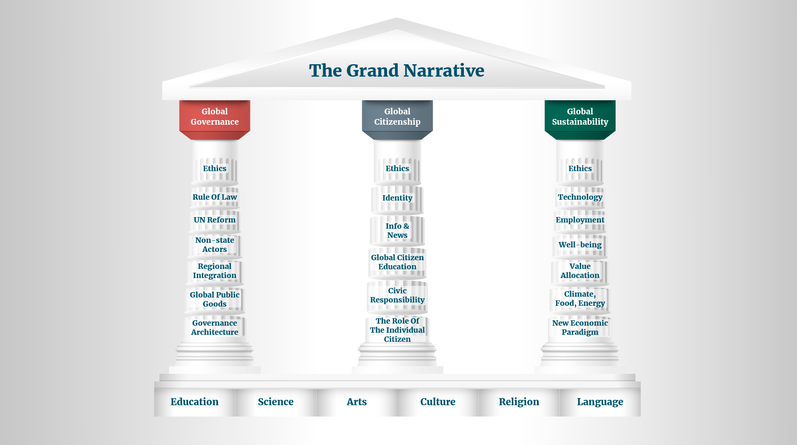
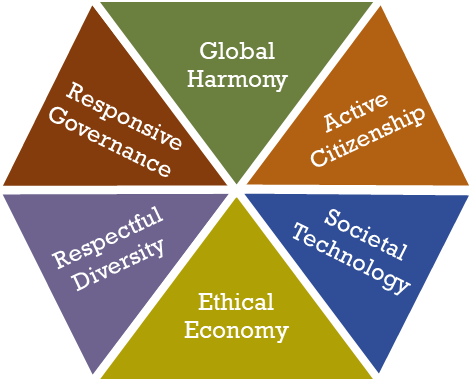

The Grand Narrative
FOGGS initiative proposing a shared global story that reconnects human development with planetary sustainability, social justice, and peace.
Overview
The Grand Narrative is a conceptual initiative developed by the Foundation for Global Governance and Sustainability (FOGGS). It seeks to articulate a shared global narrative capable of reconciling human development with planetary sustainability, social justice, and peaceful international cooperation.
FOGGS argues that many of today’s global challenges—including climate change, inequality, conflict, and institutional dysfunction—stem in part from the absence of a broadly shared narrative about humanity’s collective future. The Grand Narrative aims to provide such a framework by bringing together values, ideas, and practical approaches that place humanity and the planet at the centre of global development.
The initiative invites thinkers, practitioners, policymakers, and citizens to contribute to shaping a more inclusive and sustainable understanding of globalisation and global governance.

Background and Context
Human civilisation has always been shaped by the narratives societies tell themselves about the world and their place in it. These narratives have historically helped communities organise themselves, mobilise collective action, and build institutions—from tribes and cities to nation states and international organisations.
Over time, narratives have become more inclusive, but they have also created divisions by defining who belongs and who does not. Today the world enjoys unprecedented technological progress, increasing literacy, and declining levels of extreme poverty. At the same time, humanity faces profound global challenges including climate change, threats to peace and security, demographic pressures, inequality, and structural problems in economic and financial systems.
Globalisation under the dominant economic paradigm has not produced a narrative that is widely accepted or perceived as fair. Cultural, religious, and national identities continue to mobilise large groups of people and shape collective memories and identities. While such narratives can foster belonging, they may also deepen divisions if viewed in isolation.
The Grand Narrative initiative was developed in response to this context. It seeks to bridge the gap between the winners and losers of globalisation and promote a vision of globalisation that connects rather than divides, providing space for all people to live with dignity and security.
The Grand Narrative Initiative
The Grand Narrative seeks to fulfil three main functions.
Explaining the world
The Grand Narrative offers a framework for understanding humanity’s shared challenges and responsibilities. It connects people through common values, needs, and aspirations while acknowledging the diversity of cultures and perspectives across the world.
Challenging existing systems
The initiative encourages reflection on the systems that shape modern societies, including economic models, governance structures, technological development, and environmental stewardship. It seeks to promote approaches that align innovation, sustainability, and social justice.
Binding people and ideas
The Grand Narrative also functions as a platform for dialogue. FOGGS brings together practitioners, researchers, civil servants, entrepreneurs, artists, and citizens to exchange ideas and develop solutions for global challenges.
The initiative builds on existing global frameworks—including the United Nations Charter, the Universal Declaration of Human Rights, and the Sustainable Development Goals—while seeking to connect them within a broader narrative of shared responsibility and global citizenship.
The FOGGS Hexalogue
The FOGGS Hexalogue summarises the core principles of the Grand Narrative in six interconnected points.

- Harmony within humanity and with planet Earth. Humanity holds a position of strength on the planet but also bears responsibility towards other people, other species, and the natural environment. Addressing global challenges such as poverty, conflict, environmental degradation, and disease requires collective action and cooperation across societies and nations.
- States and international organisations at the service of people. Institutions exist to improve human well-being and advance the common good. Governments, international organisations, and public institutions should operate in the service of citizens, ensuring transparency, accountability, and effective governance.
- Human diversity and tolerance. Despite cultural, linguistic, religious, and social differences, humanity constitutes a single community with shared needs and responsibilities. Respect for human rights, tolerance, and solidarity are essential for addressing global challenges and maintaining peaceful societies.
- The economy at the service of humanity. Economic systems should support human well-being and equitable development rather than serving narrow interests. Entrepreneurship, trade, and finance play important roles in society but should contribute to shared prosperity, meaningful employment, and sustainable use of resources.
- Science and technology with social responsibility. Scientific progress and technological innovation have enabled major improvements in human welfare. However, advances in science and technology should remain connected to societal needs and ethical considerations, ensuring that innovation benefits humanity as a whole.
- Active global citizenship. The responsibility for shaping the future of the planet ultimately rests with individuals as well as institutions. Citizens, professionals, entrepreneurs, and communities all have a role in promoting responsible choices, social engagement, and global solidarity.
Participation and Dialogue
The Grand Narrative initiative invites individuals and organisations from all parts of the world to contribute ideas, perspectives, and practical solutions. Through dialogue, collaboration, and reflection, the initiative seeks to build a shared narrative that can guide humanity toward a more sustainable, peaceful, and inclusive future.